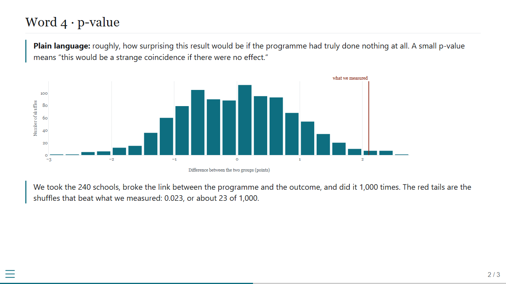
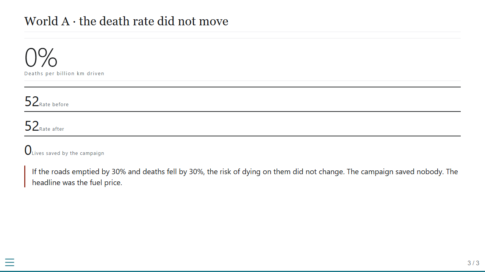
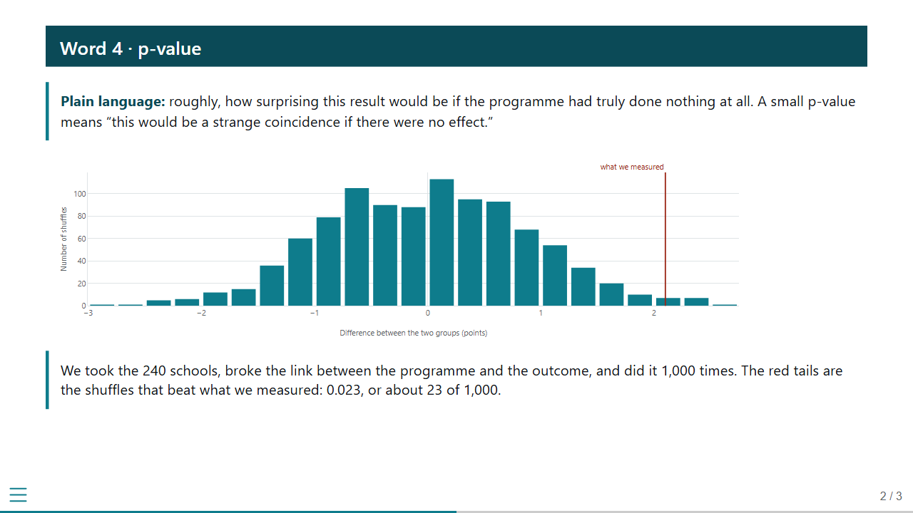
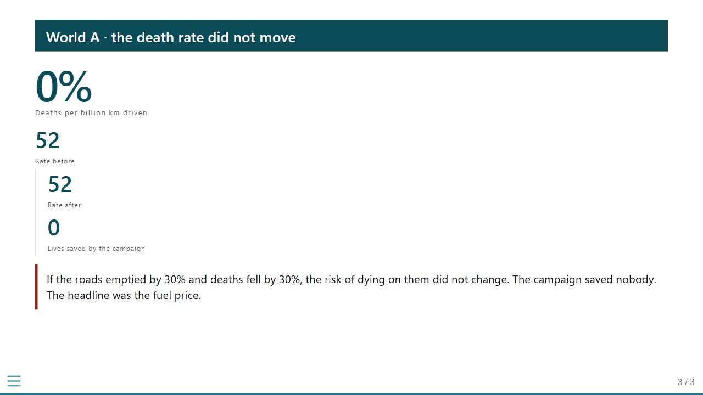
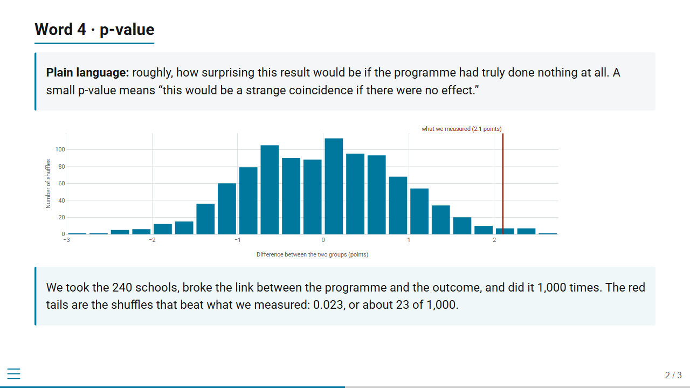
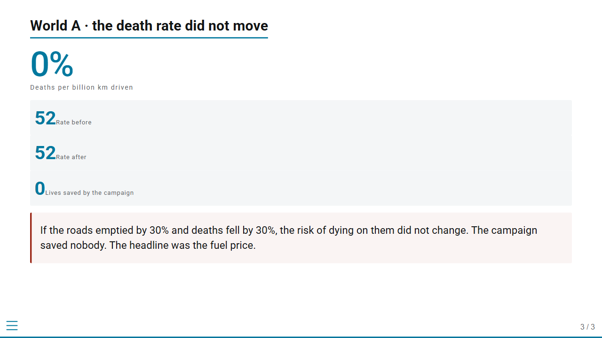

The same two slides rendered three ways. Slide 2 is a content slide with a heading, a callout, a full-width chart and a second callout. Slide 3 shows the hero number and the three-across stat row. The live, interactive versions are the three HTML files in this folder.
Serif headings at regular weight, one hairline under the title. Callouts are a rule and an indent, with no fill and no radius. Charts sit directly on the page. Type at 24px. System fonts only, so nothing depends on the network.


Live: style_a.html
A solid deep-teal band carries the heading on every slide, so the slide is anchored without any boxes below it. Callouts are a heavy rule with a coloured lead-in. Charts at full width. Type at 24px. System fonts only.


Live: style_b.html
Keeps what the module already uses and Fiona has reviewed: teal underline heading, tinted callout with a left rule, the validated palette. Shadows, gradients, hatching and the chart cards are gone, and the type is tightened from 30px to 26px.


Live: style_c.html